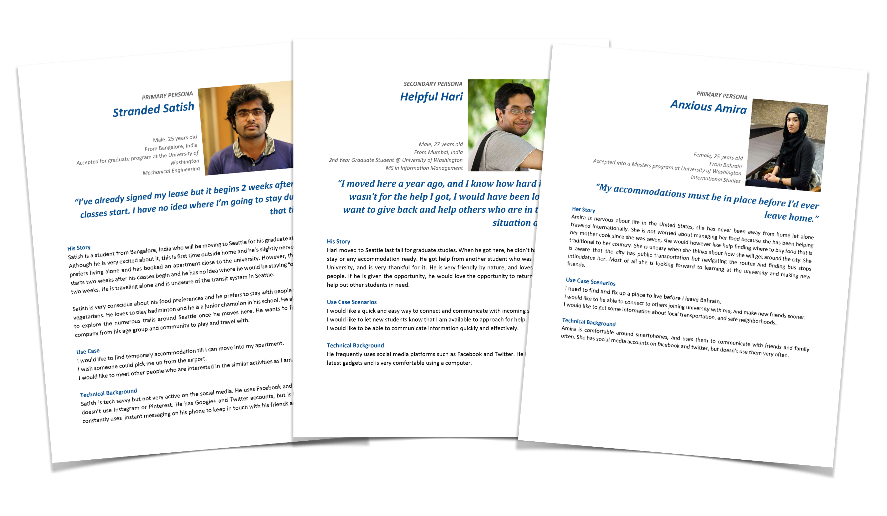

The Problem
As a part of a class project, we sought to explore the problems that international students face when they move to the United States. The change in climate, food, culture, laws and overall lifestyle add to the challenges of everyday school life for these students. Our goal is to find a solution to make this transition easier for international students who are new to the country, and help them settle down more comfortably and quickly.
Process

The project spanned over 10 weeks. We worked through the entire user-centered design process, from User Research to Hi-Fidelity prototypes.
Research
Our research group consisted of international students at the University of Washington, Bellevue College and Seattle Central College, who recently relocated to the United States. We also interviewed several students who have been living in the USA for the recent few years.
Our surveys comprised of students from over 11 countries and we interviewed students from over 4 countries.

Our research findings allowed us to narrow down our focus on the top problems that our target users faced. The research data showed us that finding good and affordable housing, like-minded roommates were the biggest problems that they faced. A lot of our participants also expressed that they would like to have had a point of contact before they arrived, so they could have access to information to help them plan their trips better.
We also identified and understood the workings of a student body that was providing a similar solution by helping new students who are moving to the Seattle. They provided temporary housing, airport pick-ups, information and mentorship for everyday life activities.
Personas

Using the data gathered from our research, we went on to create personas. We identified that there were two distinct roles that would need to be filled. We have students who are outside the country who need help, and students who are already in the country who could provide help and information.
We designed two primary personas, Satish and Amira, who were students starting their programs this year, and a secondary persona, Hari, who has been at the University of Washington for a year now, and is willing to help new students transition.
Design Requirements
We put our heads together to come up with a list of design requirements to make sure that we were all on the same page.
- The solution should be internationally available and easily accessible.
- It should connect new students to each other.
- It should connect new students with existing students who had moved to the United States before them.
- It should be a secure platform, with some form of verification, to make sure that the information posted is legitimate.
Brainstorming & Sketching
Keeping our design requirements at the back of our heads, we got together and brainstormed ideas. The sky was the limit here, and we encouraged each other to come up with as many ambitious ideas as possible. Doing so allowed us all to bounce ideas off each other and evolve them into more concise once.
We picked the best of the instances and created low fidelity wireframes to refine and test them.
Wireframes

Prototyping & User Testing
We converted our wireframes into paper prototypes and created a task flow. We tested for usability issues and clarity of the interface.
We conducted usability tests with four users and got some very valuable feedback about the information architecture, the interface flow, and were also able to deduce what sort of icons worked for an international audience and what didn't.
After a few iterations and loads of feedback, we were ready to come up with a more high fidelity mockup.
Visual Design
With our high fidelity mockup, we wanted to get a sense of what exactly the app would look like. We created the android application mockup, and a few things we wanted to focus on when creating this were:
- Follow material design guidelines, giving the application a native feel.
- Use the University of Washington colors and branding to give users a sense of familiarity when using the app.
- Use the University of Washington NetID sign-in to ensure authenticity of the users on the platform.
- Use internationally understandable icons.
What I've Learnt
This project has been amazing to work on, and has helped me understand how to design with the user in mind. I learnt a great deal from it, but to list my top takeaways from working on this project:
- Research is the key! It is important to take your time and do it right.
- Keep the users close to the design process, and keep testing with them every step of the way.
- When designing for an international audience, it is important to talk to users from different demographics and make sure the solution would work just as well for all of them.
- Listen closely to what everybody has to say. Sometimes, ideas come out of the most unexpected places.